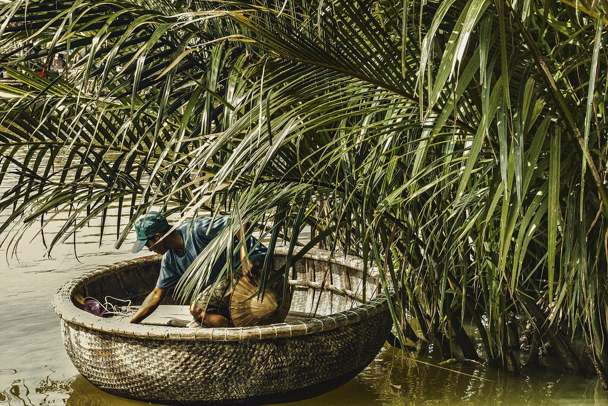

Tiếng Việt
Tiếng Việt English
English 한국어
한국어 中文
中文 Русский
Русский Deutsch
Deutsch
어린 자녀와의 여행에는 늘 걱정이 따릅니다. 아이가 더위를 견딜 수 있을지, 음식이 입에 맞을지, 호텔에 아이가 놀 곳이 있을지. 다행히 호이안은 아이들에게 매우 친화적인 곳입니다. 도시가 작고 삶의 속도가 느리며 야외 활동이 많고 음식도 먹기 쉽습니다. 이 글은 CGP 럭셔리 호텔에 묵었던 가족들의 실제 경험을 모아 부모와 아이 모두 즐거운 휴가를 준비할 수 있도록 도와드립니다.
호이안이 가족 여행에 좋은 이유
짧은 이동 거리
구시가지, 시골 마을, 해변이 모두 가깝습니다. CGP에서 구시가지까지 약 1km, 안방 해변까지 약 3km라 아이들이 차에 오래 앉아 있을 필요가 없습니다.
느린 삶의 속도
구시가지는 여러 시간대에 차량 진입이 제한되어 길이 좁고 가족이 걷기에 더 안전합니다.
다양한 야외 활동
바구니 배 타기, 도자기 만들기, 채소 기르기, 등불 띄우기, 해수욕. 모두 아이들이 좋아하는 체험입니다.
먹기 쉬운 음식
치킨라이스, 반미, 미꽝, 열대 과일은 아이들이 쉽게 적응하는 음식이며 미리 말하면 맵지 않게 해 줍니다.
여행하기 좋은 시기
어린 자녀가 있는 가족에게는 날씨가 가장 중요합니다. 호이안은 건기와 우기, 두 계절이 뚜렷합니다.
| 시기 | 날씨 | 가족 여행 평가 |
|---|---|---|
| 2월~4월 | 선선하고 비가 적으며 햇살이 부드러움 | 가장 이상적, 아이들이 야외에서 마음껏 놀 수 있음 |
| 5월~8월 | 덥고 화창, 35°C가 넘는 날도 있음 | 여름방학에 적합, 이른 아침과 늦은 오후에 활동 |
| 9월~12월 | 우기, 10월과 11월은 침수 가능 | 신중히 고려, 일정을 유연하게 |
| 12월~1월 | 선선하고 이슬비 | 따뜻한 옷을 챙기면 쾌적함 |
여름방학 여행6월부터 8월 사이라면 관광은 이른 아침과 늦은 오후에 계획하세요. 한낮에는 호텔로 돌아와 쉬고 수영장에서 더위를 피하세요.
가족을 위한 객실 선택
객실은 여행 내내 가족의 "베이스캠프"이니 신중하게 고르세요. CGP 럭셔리 호텔의 모든 객실은 35~40㎡로 이 지역 다른 호텔보다 넓습니다.
디럭스 더블 501호: 3인 가족을 위한 최고의 선택
501호에는 따뜻한 테라코타색 헤드보드의 더블 침대 하나와 싱글 침대 하나가 있습니다. 유리문은 프렌치 스타일 발코니로 열리고 멀리 푸른 논이 보입니다. 아침이면 아이들이 발코니에 서서 날아다니는 백로와 풀을 뜯는 물소를 구경할 수 있습니다. 긴 옷장, TV, 차 코너가 있어 온 가족이 편안하게 지낼 수 있습니다.


대가족을 위한 소파 베드 객실
킹 스위트 발코니 등급의 500호에는 킹 베드와 넓은 소파 베드가 있어 따로 잘 곳이 필요한 어린 자녀와 함께하는 부모에게 적합합니다. 인원이 더 많다면 가까운 객실 두 개를 예약하세요. 예약 시 메모를 남기면 호텔에서 배정해 드립니다.
수영장 옆 1층 객실
101호와 102호는 수영장 옆 나무 테라스로 바로 열려 수영을 좋아하는 아이가 있는 가족에게 매우 편리합니다. 다만 문이 수영장으로 바로 이어지므로 부모가 항상 아이를 지켜봐야 합니다.
수영장 안전아이들은 수영장에 들어갈 때 반드시 보호자와 함께해야 합니다. 수영을 못하는 아이를 위해 팔튜브나 구명조끼를 챙기세요.
아이들이 좋아할 체험
호텔 수영장에서 물놀이
많은 아이들이 CGP 야외 수영장을 여행 중 가장 좋아하는 "명소"로 꼽습니다. 파란 타일의 수영장은 안뜰 한가운데 있고 나무 데크와 등나무 의자로 둘러싸여 있습니다. 모든 투숙객은 무료로 이용할 수 있습니다.


물야자 숲에서 바구니 배 타기
깜타인의 바이마우 물야자 숲은 아이들의 웃음이 끊이지 않는 곳입니다. 사공들이 바구니 배를 빙글빙글 돌리고, 게를 잡고, 야자잎으로 장난감을 만들어 아이들에게 선물하기도 합니다. 아이들에게 꼭 구명조끼를 입히세요.

사진: Chester Ho chesterho / Wikimedia Commons, CC0탄하 도자기 마을에서 도자기 만들기
탄하 도자기 마을은 수백 년의 역사를 지니고 있습니다. 아이들은 물레 앞에 앉아 직접 점토로 컵이나 작은 동물을 빚어 볼 수 있습니다. 아이가 직접 만든 의미 있는 기념품이 됩니다.
 사진: LÊ TẤN LỘC / Wikimedia Commons, CC BY-SA 3.0
사진: LÊ TẤN LỘC / Wikimedia Commons, CC BY-SA 3.0
짜꿰에서 하루 농부 체험
짜꿰 채소 마을에서는 가족이 함께 땅을 일구고 씨를 뿌리고 전통 물지게로 물을 줄 수 있습니다. 그다음 갓 딴 채소로 함께 간단한 요리를 만듭니다. 도시 아이들이 특히 좋아하는 체험입니다.
호아이강에서 등불 띄우기
저녁에 온 가족이 호아이강에서 배를 타고 종이 등불을 띄워 보세요. 강 양쪽에 반짝이는 등불은 아이들을 분명 신나게 할 것입니다.
 사진: lumoplank / Wikimedia Commons, CC0
사진: lumoplank / Wikimedia Commons, CC0
안방 해변에서 해수욕
안방 해변은 호텔에서 약 3km 거리로 모래가 곱고 파라솔이 있는 카페가 많습니다. 아이들은 햇살이 부드러운 오전 10시 이전이나 오후 3시 이후에 바다에 들어가게 하세요.
추천 4일 일정
아래 일정은 어린아이의 생활 리듬에 맞췄습니다. 오전에는 외출, 한낮에는 휴식, 오후에는 가벼운 활동입니다.
- 1일차
체크인과 적응
14:00부터 체크인하고 호텔 수영장에서 수영한 뒤 CGP 레스토랑에서 가볍게 저녁을 먹고 일찍 잠자리에 듭니다.
- 2일차
구시가지와 등불 띄우기
선선한 오전에 내원교와 고가옥을 둘러봅니다. 점심에는 호텔로 돌아와 쉽니다. 저녁에는 구시가지를 걷고 등불을 띄우고 째를 먹습니다.
- 3일차
바구니 배와 바다
오전에 바이마우 코코넛 숲에서 바구니 배를 탑니다. 점심은 해산물. 오후에는 안방 해변에서 수영하고 호텔로 돌아와 노을을 감상합니다.
- 4일차
도자기 마을과 체크아웃
오전에 탄하에서 도자기를 만들거나 짜꿰에서 채소를 심습니다. 호텔로 돌아와 마지막으로 수영하고 12:00 전에 체크아웃합니다.
모든 것을 미리 준비하고 싶다면 CGP의 4박 패밀리 홀리데이 패키지가 온 가족을 위해 마련되어 있습니다. 객실, 매일 조식과 패키지 페이지에 자세히 안내된 기타 혜택이 포함됩니다.
아이 짐 체크리스트
- 옷: 통기성 좋은 면 옷, 챙이 넓은 모자, 저녁용 얇은 겉옷, 우기에는 우비.
- 수영용품: 수영복, 물안경, 수영을 못하는 아이를 위한 팔튜브나 구명조끼.
- 자외선 차단: 어린이용 선크림, 선글라스.
- 기본 상비약: 해열제, 유산균, 모기 기피제, 반창고.
- 익숙한 간식: 새로운 음식에 적응하지 못할 때를 대비해 평소 먹던 과자와 우유 조금.
- 작은 장난감: 음식을 기다리거나 차를 탈 때 놀 수 있는 그림책과 색연필.
추가 도움이 필요하신가요?아기 침대가 필요하거나 아이 식사에 특별한 요청이 있다면 여행 전에 프런트에 연락해 주세요. 호텔에서 확인하고 준비해 드립니다.
자주 묻는 질문
3인 가족을 위한 객실이 있나요?
네. 디럭스 더블 501호에는 더블 침대 하나와 싱글 침대 하나가 있어 자녀 한 명과 함께하는 가족에게 적합합니다.
수영장은 유료인가요?
아니요. 야외 수영장은 모든 투숙객에게 무료입니다. 아이들은 보호자와 함께 이용해야 합니다.
공항 픽업 서비스가 있나요?
네. 공항 픽업은 유료이며, 인원과 짐에 맞는 차량을 배정할 수 있도록 프런트에 미리 예약해 주세요.
패밀리 홀리데이 패키지에는 무엇이 포함되나요?
4박 숙박과 매일 조식, 기타 혜택이 포함됩니다. 자세한 내용은 패밀리 홀리데이 패키지 페이지를 확인하세요.